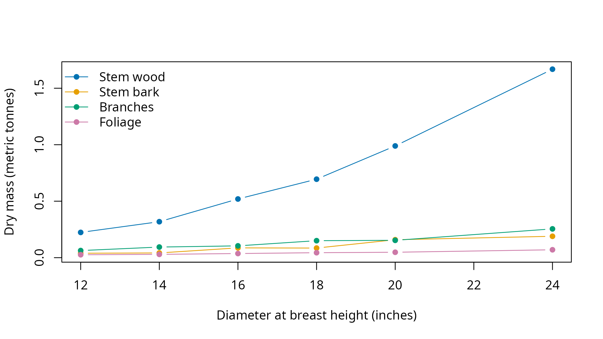

biomass() estimates dry biomass and carbon in metric
tonnes from tree diameters in inches and total heights in feet. Use it
to attach tree mass estimates to a measured or completed tree list,
independently of product specifications. National coefficients apply
when no location code is supplied, and results retain the input order
for joining tree identifiers.
Which mass total should be used?
The aboveground total excludes foliage and contains stem wood, stem bark, and branches. Roots are not estimated. Foliage is returned separately, so it can be retained as a separate component or added to that total when an aboveground total including foliage is needed.
Stem wood and bark are also partitioned into stump, sawlog, topwood,
and tip components. Those component columns overlap the whole-stem
columns. Likewise, dry_top_and_limb combines tip wood, tip
bark, and branches, so it must not be added to a total that already
contains them.
## Attach the calculation and data tools
library(merchandiser)
library(dplyr)
## Estimate the tree's mass without product specifications
mass <- biomass(dbh = tree$dbh,
ht = tree$ht,
spcd = tree$spcd)| aboveground excluding foliage (tonnes) | stem wood (tonnes) | stem bark (tonnes) | branches (tonnes) | foliage (tonnes) |
|---|---|---|---|---|
| 1.302 | 0.989 | 0.159 | 0.154 | 0.048 |
The tree’s aboveground dry mass excluding foliage is 1.302 tonnes, the sum of its stem wood, stem bark, and branches.
The component boundaries use the biomass calculation’s own stem assumptions. They do not read a merchandising result or its selected logs. Changing a product’s length therefore does not change this tree-level estimate. Optional component limits are documented in the function reference when a different partition is required.
How is carbon calculated?
carbon_fraction() returns the species fraction of dry
mass used by the biomass calculation, with its source recorded as an
attribute. Multiplying the aboveground mass excluding foliage by that
fraction gives carbon mass. The carbon dioxide equivalent column
converts carbon mass by the molecular mass ratio used in the
calculation.
## Inspect the species carbon fraction and its source
fraction <- carbon_fraction(spcd = tree$spcd)| carbon / dry mass (fraction) |
|---|
| 0.516 |
The fraction for this species is 0.516, applied to dry aboveground mass excluding foliage. Its source attribute identifies the Forest Service National Volume Estimator Library table and source routine.
## Check carbon against the returned dry mass
carbon_check <- mass %>%
mutate(calculated_carbon = dry_aboveground_no_foliage * fraction)| carbon (tonnes) | calculated carbon (tonnes) | carbon dioxide equivalent (tonnes) |
|---|---|---|
| 0.672 | 0.672 | 2.463 |
The calculated and returned carbon masses agree at 0.672 tonnes. Foliage carbon is not included in either value.
The result also includes a status for each input row. Invalid measurements leave missing mass values in their original positions, preserving alignment with the submitted list. The function does not attach identifiers automatically.
How do components vary across a tree list?
The same function accepts vectors, returning rows in input order. Bind those rows to the original list before grouping by stand or species. The figure separates components that can be added together and leaves foliage visible as a separate series.
## Calculate masses for the shipped range of tree dimensions
trees <- example_trees %>%
bind_cols(biomass(dbh = example_trees$dbh,
ht = example_trees$ht,
spcd = example_trees$spcd))| tree_id | species code | diameter (inches) | stem wood (tonnes) | stem bark (tonnes) | branches (tonnes) | foliage (tonnes) |
|---|---|---|---|---|---|---|
| 1 | 202 | 12 | 0.224 | 0.039 | 0.063 | 0.026 |
| 2 | 263 | 14 | 0.318 | 0.042 | 0.094 | 0.029 |
| 3 | 202 | 16 | 0.520 | 0.087 | 0.105 | 0.037 |
| 4 | 263 | 18 | 0.695 | 0.085 | 0.150 | 0.044 |
| 5 | 202 | 20 | 0.989 | 0.159 | 0.154 | 0.048 |
| 6 | 263 | 24 | 1.669 | 0.189 | 0.255 | 0.070 |
The first tree contributes 0.224 tonnes to the stem-wood series in the figure.

The smallest example tree has 0.039 tonnes of dry stem bark. These points combine the shipped species and heights, so the connecting lines are not a fitted diameter-only relationship.
How can location select coefficients?
The optional division argument accepts an ecological
division code. nsvb_division() looks it up from numeric
state and county codes, and nsvb_division_xy() looks it up
from coordinates. The coordinate lookup defaults to longitude and
latitude. Using another coordinate reference system through
crs requires the sf package, listed under Suggests.
## Look up coefficients using explicit state and county codes
county <- nsvb_division(state = 41, county = 5)
## Look up the shipped coordinates directly
location <- nsvb_division_xy(x = example_trees_pnw$longitude[1],
y = example_trees_pnw$latitude[1])| lookup | division code | status |
|---|---|---|
| county | 1242 | 0 |
| coordinates | 1240 | 0 |
The coordinate lookup returns division 1240. Check its status before
passing the returned code to biomass(), since an
unrecognized location is not a national-coefficient request.